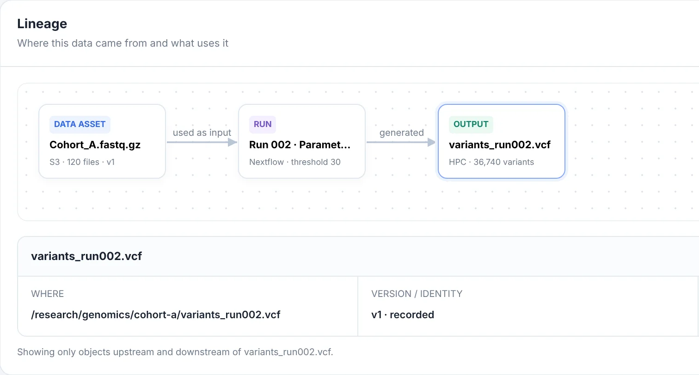
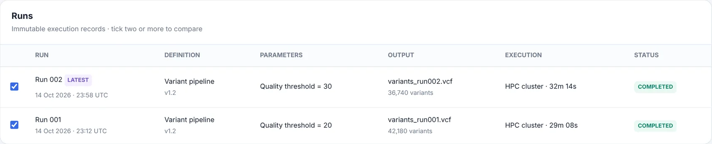
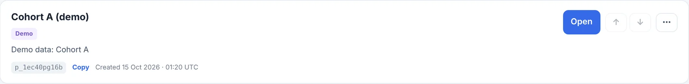
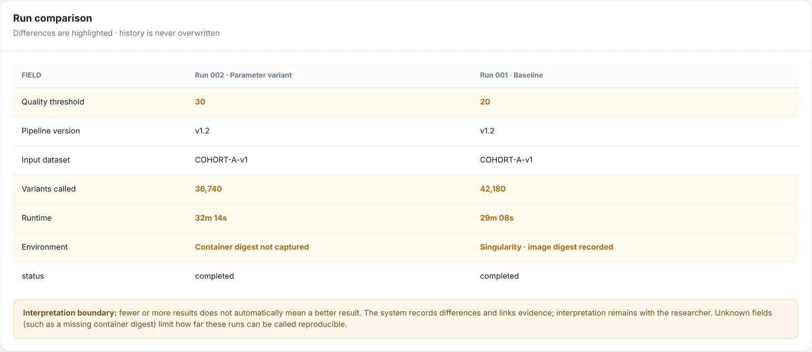

A metadata layer for scientific data Early stage, invite-only
See how any result was made.
Jubilab is a local-first, self-hostable metadata layer for scientific data. It records each processing run with its inputs, parameters and versions, and shows lineage from any output back to its inputs.
Real interfaceThe lineage view of an output file, cropped from the running product. Cohort A is synthetic demo data.
- InputA pointer to data that stays where it is.
- RunThe processing step, with its parameter.
- OutputThe result you opened.

Scroll the screenshot sideways.
Every run is kept, with what went in
Each processing run is stored as an immutable record: the input data, the parameters, the pipeline version, where it executed and what came out. A new run never overwrites an old one.

Scroll the screenshot sideways.
- Immutable recordsOne row per run. Tick two or more to compare them.
- ParametersEach run keeps the values it was started with.
- OutputThe file each run produced, with a one-line description.
- Where it ranExecution environment and duration.
What one record holds
The same run, seen from two sides: the command line that wrote it and the interface that shows it. The data itself is not in the record, only where it is.
| Field | Value |
|---|---|
| From the arguments of a real command-line call | |
| id | run-002 |
| name | Variant calling, threshold 30 |
| input | fastq-v1 |
| parameter | quality_threshold = 30 |
| executor | nextflow |
| status | completed |
| Shown in the interface for the same run | |
| definition | Variant pipeline v1.2 |
| execution | HPC cluster, 32m 14s |
| output | variants_run002.vcf, 36,740 variants |
| environment | unknown: container digest not captured |
Work is split into projects
Each project keeps its own data records, workflows, runs and history. Nothing is shared between projects.

Lineage, back to the inputs and forward to what depends on them
Open an output to see the run that made it and the inputs that run used. Open an input to see every run and output that depends on it. The files stay where they are; Jubilab keeps the location, the version and a short description.
Scroll the diagram sideways, or read the text version below.
Text version
- Backward from variants_run002.vcf. It was generated by Run 002, which used Cohort_A.fastq.gz (data asset, S3, 120 files, version v1) as input.
- Forward from Cohort_A.fastq.gz. Run 001 and Run 002 both used it. Run 001 generated variants_run001.vcf (HPC, 42,180 variants) and Run 002 generated variants_run002.vcf (HPC, 36,740 variants).
- What changed. Run 002 (Nextflow) ran with quality_threshold = 30 where Run 001 ran with 20.
- What is unknown. The container digest of Run 002 was not captured.
Compare two runs and see what changed
Tick two runs and Jubilab lines up their fields. Differences are marked with the word “changed” and an amber tint, and matching rows stay plain. It records the difference and does not say which result is better.
| Field | Run 001 | Run 002 | State |
|---|---|---|---|
| Quality threshold | 20 | 30 | Δ changed |
| Pipeline version | v1.2 | v1.2 | same |
| Input dataset | COHORT-A-v1 | COHORT-A-v1 | same |
| Variants called | 42,180 | 36,740 | Δ changed |
| Runtime | 29m 08s | 32m 14s | Δ changed |
| Environment | Singularity, image digest recorded | Container digest not captured (unknown) | Δ changed |
| Status | completed | completed | same |
A gap stays a gap. Run 002 has no container digest recorded, and the interface says that this limits how far the two runs can be called reproducible. More or fewer results does not automatically mean a better result, and interpretation stays with the researcher.

Scroll the screenshot sideways.
Every fact carries a label
A record that looks complete can still have gaps. Jubilab marks each fact as verified, inferred, manual or unknown, so you can see what was checked and what was not. It does not imply that a run is reproducible because a record exists.
- verified
- Checked against the source, or captured directly by the tool.
- inferred
- Worked out from other records, not observed directly.
- manual
- Entered or annotated by a person.
- In the demo: the decision “Run 001 kept as baseline” is a researcher annotation.
- unknown
- The record does not say. Jubilab shows the gap instead of filling it in.
- In the demo: Run 002’s container digest was not captured.
Runs where you work, including where there is no internet
Jubilab starts with one command on your own machine or cluster. On a node without internet, the command-line tool writes records to a spool file and jubilab sync sends them to the server later.
Scroll the diagram sideways, or read the text version below.
Text version
The jubilab command on a node without internet appends each record to a spool file, here jubilab-spool.p_8hakp36js1.jsonl. Later, jubilab sync sends the spooled records to the Jubilab server, which reports how many were applied, duplicated or in error.
$ python -m server serve --data-dir ./data jubilab: listening on http://127.0.0.1:18190 data-dir=./data $ jubilab project create --name "Cohort A" created project p_8hakp36js1 (Cohort A) export JUBILAB_PROJECT=p_8hakp36js1 $ jubilab register-asset --id fastq-v1 --name "Cohort_A.fastq.gz" --location s3://lab-cohort-a/fastq/ --type "FASTQ collection" --version v1 spooled register_asset key=7e094854d38fcc6ea6cc87ccae08500d -> jubilab-spool.p_8hakp36js1.jsonl $ jubilab register-run --id run-001 --name "Variant calling, threshold 20" --input fastq-v1 -p quality_threshold=20 --status completed --executor nextflow spooled register_run key=a685bbb34a2ad0952f877768ca06baf3 -> jubilab-spool.p_8hakp36js1.jsonl $ jubilab register-run --id run-002 --name "Variant calling, threshold 30" --input fastq-v1 -p quality_threshold=30 --status completed --executor nextflow spooled register_run key=ed400327f323beb1c015acf5e7ed1297 -> jubilab-spool.p_8hakp36js1.jsonl $ jubilab sync synced 3 record(s) to http://127.0.0.1:18190/api/projects/p_8hakp36js1/ingest: applied=3 duplicate=0 error=0 $ jubilab status spool: jubilab-spool.p_8hakp36js1.jsonl (3 records, 0 unsynced) server: http://127.0.0.1:18190 {"projects":{"active":1,"archived":0,"unavailable":0},"status":"ok","version":"0.1.0"} project: p_8hakp36js1 (Cohort A)
- Stays on your machineThe server binds to localhost and makes no outbound network calls.
- Pointers, not dataJubilab stores where your data is and what it is, not the files themselves.
- No AI model requiredNothing here needs a language model to run.
Ask a question and get the evidence, or “cannot determine”
Questions are answered by looking up recorded facts, not by a language model. Each answer links the records it came from and lists what is missing. If the record does not say, Jubilab says it cannot determine.
![Ask page. Question: What changed between the two variant runs? The evidence-backed answer, marked incomplete, lists the differences between RUN-001 and RUN-002 (quality threshold 20 and 30, variants called 42,180 and 36,740, runtime, environment) and the unchanged fields, with links to the two runs and two output files. A box titled Missing / unknown provenance lists: RUN-002, Environment: Container digest not captured (unknown). The page states: Deterministic retrieval over structured records. No generative model.](assets/img/ask.webp)
Scroll the screenshot sideways.
- A questionTyped, or picked from a short list.
- The answer, from recordsDifferences and unchanged fields, stated plainly.
- Evidence linksEach answer points at the runs and files it used.
- What is missingThe answer is marked incomplete and the gap is listed.
What it is not, and what is not there yet
Jubilab is early-stage software. These are its edges today.
What it is not
- Not a workflow engine. Nextflow, your scheduler or a shell script still run the work. Jubilab records what happened.
- Not storage. It keeps pointers and context, not your files.
- Not a replacement for your tools. It sits beside them.
- Not a promise of reproducibility. It shows what was recorded and what was not.
Not there yet
- No sign-in or access control.
- No connectors to storage systems.
- No hosted service. You run it yourself.
- No performance figures. None are published.
Request early access
Jubilab is not publicly available. Access is by invitation while it is in early stage. When this form is switched on, you will be able to leave an email address and tell us what kind of data you work with.